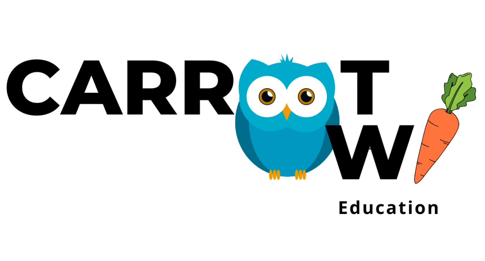

Understanding the Problem and Evaluating Existing Tools
Mapped the manual workflow, then trialled Make.com and n8n before recommending a custom tool.
View PDF
Industrial Training Documentation
| Trainee Name | Samiya Sehgal |
|---|---|
| Year & Branch | Final Year, Computer Science & Engineering |
| University Roll No. (URN) | 2302662 |
| Class Roll No. (CRN) | 2315205 |
| Training Organisation | Carrot Owl Education OPC Pvt Ltd. |
| Role | AI Automation Intern |
| Internship Duration | 8 Weeks (22 June – 22 August 2026) |
Submitted in partial fulfilment of the requirement for the award of the degree of
Bachelor of Technology — Computer Science & Engineering
This eight-week industrial training was carried out at Carrot Owl Education OPC Pvt Ltd. as an AI Automation Intern. The organisation runs several Telegram learning communities, and producing content for all of them by hand had become close to a full-time job. The training was to automate that work, and it produced an internal marketing tool called CommunityFlow.
The work was practical rather than taught. The first week went on understanding how the marketing team actually worked and testing whether a ready-made no-code platform could do the job; the remaining weeks went on building, correcting and finishing the tool that replaced that routine. Each weekly diary records what was attempted, what did not work, and what changed as a result.
An internal tool that plans, writes, designs and publishes educational posts for Carrot Owl's Telegram communities. One codebase serves every community, and each community is described entirely by its own configuration file, so adding one needs no programming.
Five AI stages run in a fixed order — Planner, Researcher, Writer, Editor and Designer — each with a single job. Graphics are not AI-generated: each post's data is filled into an HTML layout themed with the community's own colours and rendered by headless Chromium. A person approves every post before the scheduler publishes it.
Built and demonstrated for the three communities, and prepared for containerised deployment. It was not put into live public use during the internship.
Eight weeks. Each PDF is the full diary in the TR-103 format.
Mapped the manual workflow, then trialled Make.com and n8n before recommending a custom tool.
View PDFBuilt a one-call prototype, found the voice drifted, and redesigned it as separate stages.
View PDFImplemented Planner, Researcher, Writer and Editor, and wrote the brand-voice prompts.
View PDFAdded the Designer stage, HTML-to-image rendering, and the dashboard and scheduler.
View PDFMoved every community-specific setting out of the code, then added a second community.
View PDFReplaced the fixed calendar with a self-refilling topic pool that rejects rephrased repeats.
View PDFMoved the data to PostgreSQL, added timeouts and retries, and made publishing survive a restart.
View PDFVerified the main flows, wrote the documentation, containerised it and demonstrated it.
View PDFBy the end of this internship, I was able to:
Official documents from Carrot Owl Education OPC Pvt Ltd.
The organisation's letter confirming the internship and its duration.
[To be added — certificates/confirmation-letter.pdf]
Certifies completion of the eight-week training as an AI Automation Intern.
[To be added — certificates/internship-certificate.pdf]
Founder, Carrot Owl Education OPC Pvt Ltd.
Supervised the eight-week training and set the direction of the project — that CommunityFlow should be built as an internal marketing tool the organisation could carry forward and extend, rather than as a one-off exercise. Reviewed the work at each stage.